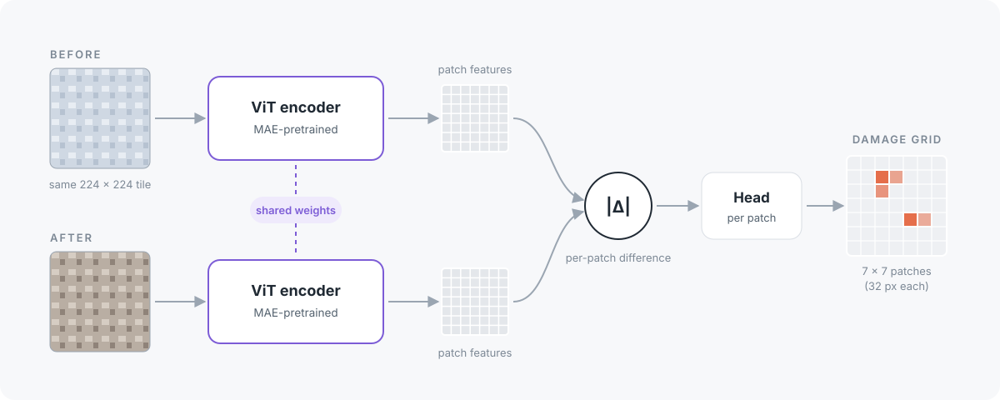
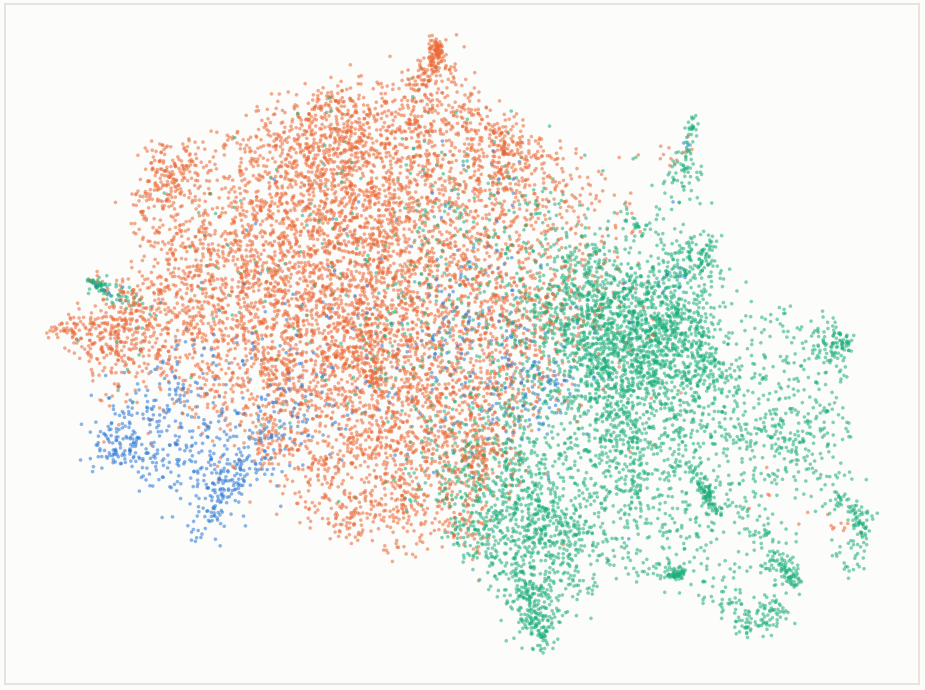
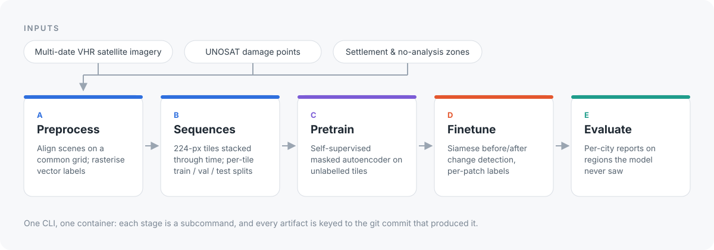
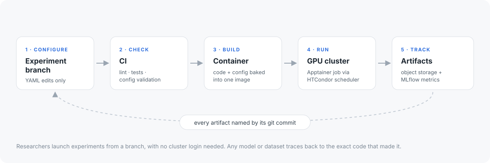

MonWaDes · Ongoing research
Detecting war damage from space
Satellites photograph cities before and after conflict, but turning those images into a map of destroyed buildings is still mostly manual work. MonWaDes is a deep-learning pipeline that learns to spot building destruction by comparing before and after images, so damage assessment can scale to new cities and new conflicts.
Why this is hard
Humanitarian agencies such as UNOSAT produce damage assessments by having analysts inspect satellite imagery building by building. These maps matter for aid planning, reconstruction and accountability, but they are slow and expensive to make, so many cities and dates are never covered.
- The signal is the difference. Damage shows up as a change between two dates, and it has to be told apart from changes in season, light and sensor.
- Every city is different. Building styles, materials, sun angles and satellites all vary across regions and dates.
- Labels are scarce. Expert damage labels exist only for some places and some dates.
- It has to work where nobody has labelled yet. That is the whole point.
The data
Multi-date, very-high-resolution satellite imagery of 15 cities in three regions. Supervision comes from UNOSAT damage assessments: expert-annotated points marking damaged and destroyed buildings at specific dates.
Ukraine
Syria
Palestine
Vision Transformers, in two steps
1. Learning what cities look like from above
Labelled damage is rare, but unlabelled satellite imagery is plentiful. So a Vision Transformer is first trained without labels, as a masked autoencoder: most of each tile is hidden, and the model learns to rebuild what it can't see. Along the way it learns what overhead urban scenes look like.

2. Comparing before and after
The pretrained encoder then becomes both branches of a Siamese network. The before and after images of the same place go through the same encoder, and the model compares their features patch by patch to estimate where buildings were destroyed.

Inside the embedding space
The encoder turns every tile into an embedding: a vector that summarises what the place looks like. Projecting thousands of them down to two dimensions gives a map of how the model sees the cities.

From raw imagery to evaluation
Everything runs as one five-stage pipeline. Raw scenes are aligned on a common grid, cut into tiles stacked through time, used for pretraining and fine-tuning, and finally evaluated city by city, including on places the model never saw during training.

Built for reproducible research
Many experiments run in parallel on a shared GPU cluster, so the infrastructure matters as much as the model. Each experiment is a git branch with a config change. CI checks it and builds a container, the run is launched on the cluster, and every dataset and model is named after the commit that produced it.

ML
PyTorch · PyTorch Lightning · Hugging Face Transformers · timm
Geospatial
rasterio · GeoPandas · xarray · Zarr
Engineering
Python · Click · Pydantic · uv · pytest
Infra
Docker · Apptainer · HTCondor · GitLab CI · MLflow
Status
This is ongoing research. Results are being prepared for publication and will be added here once they are public.